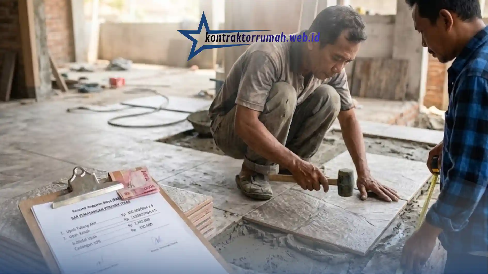

Membangun atau merenovasi rumah butuh perencanaan biaya yang matang, terutama untuk tenaga kerja. Upah tukang biasanya menyumbang sekitar 30-40% dari total anggaran. Sistem harian adalah salah satu cara pembayaran yang paling umum di Indonesia karena fleksibel.
Dengan mengetahui daftar harga upah tukang harian, Anda bisa menyusun Rencana Anggaran Biaya (RAB) lebih akurat dan menghindari pembengkakan dana di tengah proyek.
Poin Penting
- Upah tukang biasanya menyumbang 30-40% dari total anggaran bangun atau renovasi rumah.
- Estimasi upah harian: mandor Rp175.000-Rp250.000, tukang ahli Rp130.000-Rp180.000, kenek Rp100.000-Rp130.000.
- Upah dipengaruhi keahlian, lokasi proyek, jam kerja, dan uang makan atau transportasi.
- Selalu siapkan cadangan 10% dari total upah untuk kebutuhan tak terduga.
- Sistem harian fleksibel, sedangkan borongan memberi kepastian biaya.
Estimasi Upah Berdasarkan Keahlian
Upah bergantung pada keahlian, daerah, dan tingkat kesulitan pekerjaan. Angka berikut adalah estimasi rata-rata yang umum dipakai di pulau Jawa. Di kota besar atau luar Jawa, angkanya bisa lebih tinggi, jadi cocokkan dengan harga di daerah Anda sebelum menyusun anggaran.
| Peran | Tugas Utama | Estimasi Upah per Hari |
|---|---|---|
| Mandor | Mengawasi proyek, membaca gambar kerja, mengatur tim | Rp 175.000 - Rp 250.000 |
| Tukang ahli | Pekerjaan inti seperti pasangan bata, kayu, keramik, listrik, atau besi | Rp 130.000 - Rp 180.000 |
| Kenek | Menyiapkan material, mengaduk semen, membantu tukang | Rp 100.000 - Rp 130.000 |
Faktor yang Memengaruhi Upah
Selain keahlian, beberapa hal berikut ikut menentukan besaran upah yang perlu Anda siapkan dalam anggaran:
- Keahlian dan spesialisasi. Tukang finishing rapi atau instalasi listrik biasanya dibayar lebih mahal.
- Lokasi dan akses proyek. Lokasi yang sulit dijangkau menaikkan upah.
- Jam kerja dan lembur. Sepakati jam kerja standar (misalnya 08.00-16.00) dan tarif lembur sejak awal.
- Uang makan dan transportasi. Tanyakan apakah sudah termasuk upah atau dihitung terpisah.
Contoh Perhitungan Proyek Kecil
Misalnya pemasangan keramik teras selama 5 hari dengan 1 tukang ahli dan 1 kenek:

Simulasi perhitungan upah tukang keramik dan kenek untuk proyek kecil 5 hari kerja.
- Tukang keramik: Rp 150.000 × 5 hari = Rp 750.000
- Kenek: Rp 110.000 × 5 hari = Rp 550.000
- Subtotal upah: Rp 1.300.000
- Cadangan 10% untuk kebutuhan tak terduga: Rp 130.000
- Total anggaran upah: Rp 1.430.000
Harian atau Borongan?
Sebelum menentukan sistem pembayaran, kenali dulu perbedaan mendasar antara sistem harian dan borongan berikut ini:
| Harian | Borongan | |
|---|---|---|
| Cara bayar | Per hari kerja | Per proyek atau per meter persegi |
| Cocok untuk | Renovasi kecil, lingkup pekerjaan belum pasti | Pekerjaan dengan lingkup dan gambar yang jelas |
| Kelebihan | Fleksibel, mudah menambah atau mengurangi pekerjaan | Biaya lebih pasti, risiko molor ditanggung pekerja |
| Kekurangan | Durasi bisa melar, perlu pengawasan rutin | Kualitas bisa terganggu jika pekerja mengejar target |
Tips Mengelola Tukang Harian
- Pantau progres setiap hari dan catat absensi bersama tukang.
- Tetapkan target mingguan agar durasi proyek tidak melar.
- Sepakati sistem pembayaran (harian atau mingguan) di awal.
- Siapkan cadangan sekitar 10% dari total upah untuk hal tak terduga.
FAQ Seputar Upah Tukang Harian
Upah tukang harian sangat dipengaruhi keahlian dan lokasi. Dengan angka yang realistis, cadangan biaya, dan pengawasan rutin, Anda bisa menjaga anggaran tetap terkendali. Jika butuh bantuan menyusun RAB yang lebih detail, tim jasa kontraktor rumah Kontraktor Rumah siap membantu.